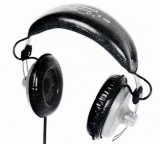
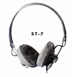
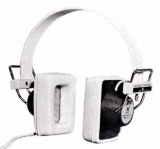
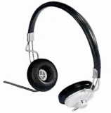
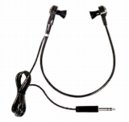
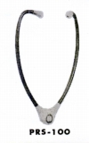
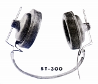
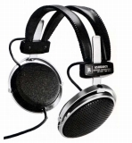
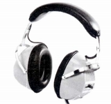
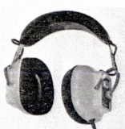

ASIDAVOX（アシダヴォックス）
1950年設立のアシダ音響の商標。1959年にはすでに民生用ヘッドフォンの開発を行っていた老舗メーカーで、最初の民生用製品と思われるST-1のデビューは1960年である。ELEGA （エレガ ）、HOSIDEN（ホシデン）とともに1960年代までのダイナミックヘッドフォンの歴史を作ってきたメーカー。またソニーのMDR-CD900STが普及するまでは、国内のスタジオで最もポピュラーなモニターヘッドフォンのメーカであった。
同社のヘッドフォンについては、業務用の性格が強く、1970年代後半には現在まで続くモニター系の製品の骨格はできていた。鑑賞向けともとれるモデルもあったが、1980年代に一般向け市場からは撤退したようだ。しかし、東急ハンズ等、一部の店での販売が続いていた。
なお、現在（2021年5月時点）の、同社の製品カタログでは1960年代のモデル(ST-3など）がいまだに残っている（＊）。
＊ただし当時の資料と若干スペックが違うので一部部品の変更があるのかもしれない。
（密閉型モデル）
ST-1 ST-3 ST-3R ST-7 ST-10 ST-11 ST-11S ST-12
  

＊ST-11についてイベントで撮影した画像を使用しました。撮影及び掲載をご許可いただき、ありがとうございました。
（その他）

（聴診器型？） PRS-100

（ヘッドバンドレス？） ST-300

 
（4ch機） ST-4000R
